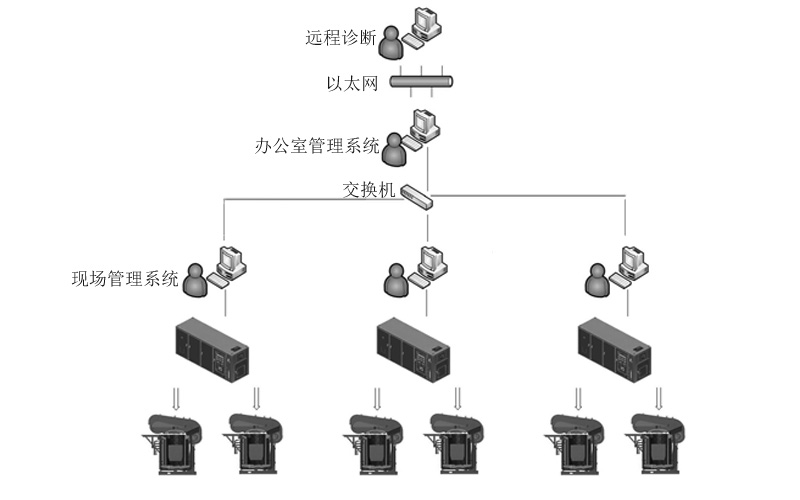
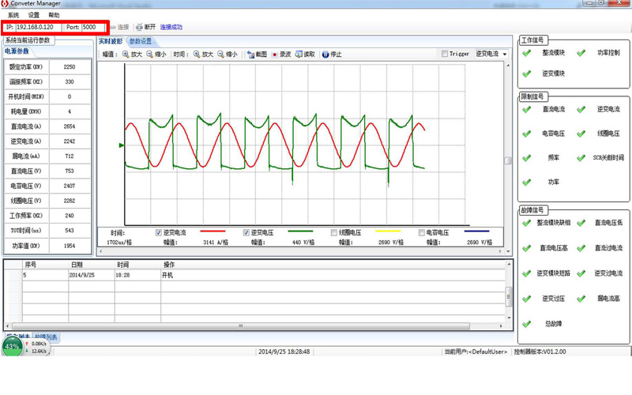

感应加热监测和保护控制系统
-

熔炼管理系统框架
实时监测与诊断
项目介绍
用于钢铁熔炼感应加热过程中的监测和保护控制
- 系统简介
- 以飞思卡尔公司的ARM为核心，实时监测感应加热过程中的电力参数，通过以太网通讯传送至本地及远程计算机的上位机，并具备报警保护功能
- 技术环节
-
- 控制器：基于Freescale MQX实时操作系统的实时监测
- 上位机：基于C#的windows窗体程序，采用以太网通讯方式
- 项目说明
- 本控制器软硬件皆自行设计，实验功能良好，目前处于使用中